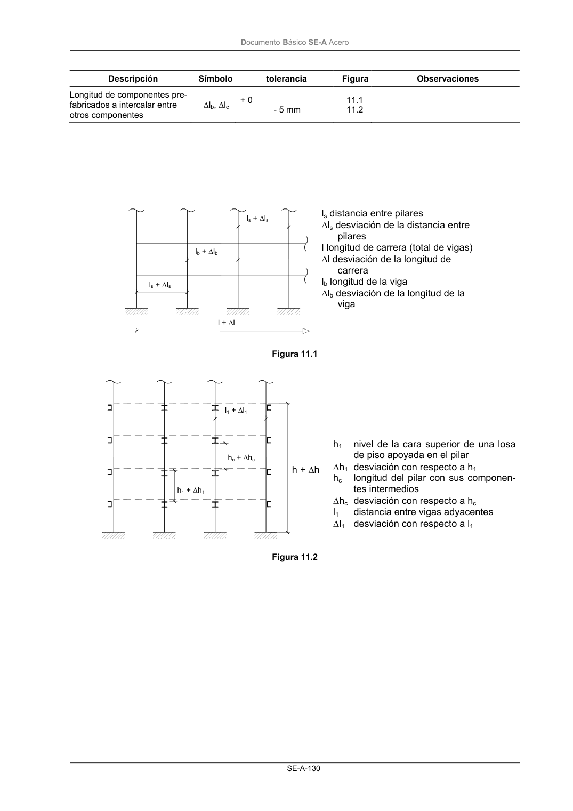

DB-SE-A · Página 132 · versión 2007-10-23
SHA256: 9ed9ea694aabfbda3bfbbef40dfe9223fde05d13c35bc2ba9751e5a96a22a64f · página física 132 de 168 · métodos de encabezado
solo si están cotejados.
Documento · ← p. 131 · p. 133 →
Formatos: Markdown · JSON de bloques · PDF p. 132 · imagen PNG
Documento Básico SE-A Acero
SE-A-130
Descripción
Símbolo
tolerancia
Figura
Observaciones
Longitud de componentes pre-
fabricados a intercalar entre
otros componentes
∆lb, ∆lc
+ 0
- 5 mm
11.1
11.2
Figura 11.1
Figura 11.2
ls + ∆ls
ls + ∆ls
lb + ∆lb
ls distancia entre pilares
∆ls desviación de la distancia entre
pilares
l longitud de carrera (total de vigas)
∆l desviación de la longitud de
carrera
lb longitud de la viga
∆lb desviación de la longitud de la
viga
h1 + ∆h1
hc + ∆hc
l1 + ∆l1
h1
nivel de la cara superior de una losa
de piso apoyada en el pilar
∆h1 desviación con respecto a h1
hc
longitud del pilar con sus componen-
tes intermedios
∆hc desviación con respecto a hc
l1
distancia entre vigas adyacentes
∆l1 desviación con respecto a l1
h + ∆h
l + ∆l
